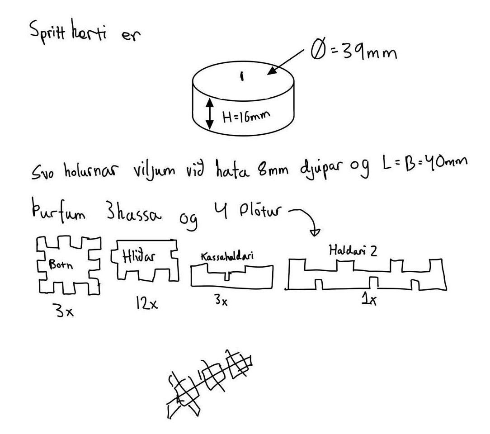

Verkefni 2
Inngangur
Í þessu verkefni á að nota vínylskeran til að búa til límmiða á sem má í það mesta vera á 100x50cm skurðfleti. Einnig á að hanna parametrískt, pressfit módel af byggingareiningum. Módelið þarf að vera skalanlegt á mismunandi máta (efnisþykkt, hæðir og breiddir sem nemandi velur), útfært með góðum parametríum í hugbúnaði að eigin vali. Hönnunin þarf að innihalda amk 3 geirnegldar festi punkta. Auka stig fyrir mismunandi gerðir af festingum.
Geislaskeri
Hugmyndavinna
Ég fékk hugmynd í byrjun og ákvað strax að byrja vinna í henni. Hugmyndin var kertistjaki sem heldur þrem sprittkertum. Hönnuninn er frekar einföld, hér fyrir neðan er smá skissa:
Kerf
Þessi hluti verkefnisins var hópaverkefni. Hér vann ég með Hilmari Loga Pálssyni og Sigurði Helga Ágústssyni. Geislinn í geislaskeranum brennur hluta efnisins í burtu og er mikilvægt að gera ráð fyrir því í teikningum. Þetta kallast kerf og sú vegalengd er misjöfn eftir hverjum geislaskera. Fyrsta sem þurfti að gera er að teikna hlut sem þarf að prufa. Teiknað var 10 kassa þar sem allir eru 1x1cm í Fusion360. Þegar teikningin var klár þarf að exporta sem DXF skrá svo hægt sé að setja teikninguna inn í Inkscape. Í Inkscape er teikningunni stillt upp á kannt skurðsvæðis svo efnið sé nýtt sem best. Setja þurfti nokkrar upplýsingar inn í Inkscape svo geislin fer alveg örugglega í gegnum plötuna. Opnað er Fill and Stroke of svo farið í Stroke style þar sem línuþykktin er stillt á 2mm. Næst er að færa teikninguna með USB kubb yfir í tölvuna sem geislaskerinn er tengdur við og opna skjalið þar. Síðan er ýtt á print og valið geislaskeran. Hér þarf að ýta á Auto Focus og velja Thickness og ýta á möppuna efst í hægra horninu og velja efnið sem hjá okkur er Acryl 3mm og setja inn þyktina á efninu undir Thickness. Síðan getur maður byrjað skurðin.
Þegar skurðurinn var búinn voru bútarnir teknir og mældir til að finna Kerf. Það var gert með því að færa kubbana alveg á einn endan og síðan mæla bilið sem myndaðist einum megin og deila með fjöldi lína sem var skorinn. Samkvæmt okkar talningu voru 11 línur og mælingin með skífmáli var 2.3mm. Þannig kerf hjá okkur mældist sem 0.209mm. Eftir samræður við samnemendur komumst við að því að við vorum með töluvert hærra Kerf en flestir og gæti ein útskýringin á því verið að þegar teiknað var í fusion var einn kassi teiknaður og copyaður hlið við hlið. Þannig geislinn gæti hafa farið í sumar línur tvisvar og tekið aðeins meira efni en átti að vera.
Vinna
Til að byrja með þurfti að ákveða hvaða forrit ég vildi vinna með og þar sem kennari mældi með Fusion 360 varð það teikniforrit fyrir valinu. Ákveðið var að byrja teikna kassana sem sprittkertin eiga að vera í. Þegar ég byrjaði áttaði ég mig á því að þetta verkefni er aðeins flóknara en ég gerði ráð fyrir. Næsta sem ég ákvað þá að gera er að finna YouTube videó.
Þetta Video hjálpaði mikið. En við gerðina á kassanum áttaði ég mig á því að ég vildi parametra þetta þannig að mjög létt væri að skala hönnunina út frá stærð kerta. Þannig gerði ég það og hægt að breyta parametrum í F3d skránni miðað við stærð kerta og fjöldi fingra til að púsla þessu saman. Þegar kassinn var kláraður þurfti bara að búa til festingu undir til að halda öllu á sínum stað. Við teikningu á botninum ákvað ég að ég vildi hafa miðju sprittkertið aðeins hærra uppi, persónulega fannst mér það gera hönnunina flottari. Hérna fyrir neðan eru myndir af hönnuninni.
Kerf og prentun
Núna þarf að laga fyrir kerf. Ég fór eftir vídeóinu vinstra megin fyrir það. Þurfti bara að búa til nýjan laserskera og setja bara inn Kerf. Síðan setti ég alla hlutina fletina flatt niður XY-planið og fór eftir vídeoinu hér hægra megin til að vista verkefnið sem DXF til að færa yfir í Inkscape. Þá átti bara eftir að skera hlutinn út. Upplýsingarnar um það eru fyrir ofan í KERF-hlutanum.
Vínylskeri.
Erfiðasta við þetta verkefni var að finna út hvað ég vildi vínylskera. En eftir smá sálarleit ákvað að prenta og skjalfesta stærsta markmiðið fyrir útskriftarferð til Budva. Þannig ég ákvað að skera út setningu. Setningin er: 95KG SKORINN. Ég hafði smá reynslu á Inkscape og þar sem verkefni var mjög einfalt þá fór ekki mikill tími í hönnunina. Það voru í endanum ekkert svokalllað "Segmented Line" í teikningunni svo þurfti ekkert að laga þar. Svo næsta sem þurfti að gera er að færa teikninguna yfir á tölvu sem er tengd skeranum með USB-lykli. Ég fann svartan grunn og ákvað að það væri nógu flott fyrir mig. Setti blaðið í skerann og kveikti á honum. Ýtti á "select sheet" og "Edge" á skeranum. Þá var allt tilbúið og ég setti límiðan upp í vélastofunni þar sem við höfum hengt upp allskonar hluti.
Myndir
Tími sem fór í hvern verkþátt
| Nr | Verkþáttur | Klukkutímar |
|---|---|---|
| 1 | Undirbúningur/leit að hugmyndum | 1 |
| 2 | Kerf prófun | 2 |
| 3 | Vinna í Fusion | 8 |
| 4 | Geislaskurður og samsetning | 2 |
| 4 | Vínylskurður | 2 |
| 5 | Vefsíðugerð | 3 |
| Heildartími | 18 |